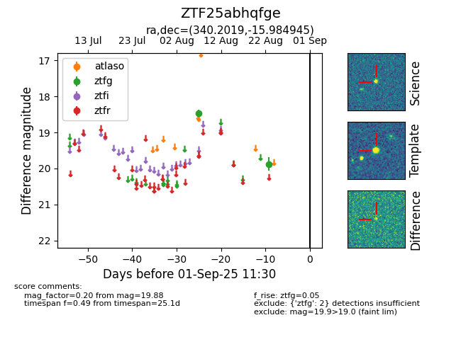

Target ZTF25abhqfge at 2025-08-26 11:30, see:
FINK: fink-portal.org/ZTF25abhqfge
Lasair: lasair-ztf.lsst.ac.uk/objects/ZTF25abhqfge
ALeRCE: alerce.online/object/ZTF25abhqfge
alt names
ZTF25abhqfge (ztf,fink)
coordinates:
equatorial (ra, dec) = (340.2019,-15.98494)
galactic (l, b) = (46.3717,-57.76736)
photometry
last ztfg=19.88
2 ztfg detections
